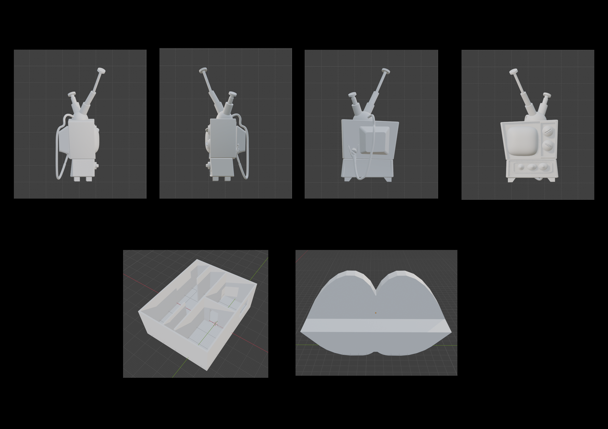

The House
Real‑time environment focused on the procedural creation of materials and their practical application in scene.
Show details
Materials


3D Models

Real‑time environment focused on the procedural creation of materials and their practical application in scene.
